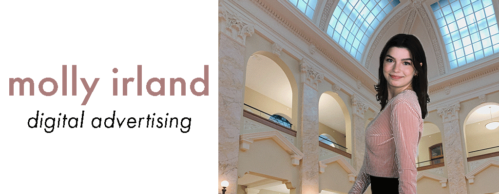

Molly Irland's Biography
Personal Information
My name is Molly Irland and I am majoring in Advertising with an interest in branding and digital marketing. As a Newhouse Leadership Scholar, I have received a spot on the Dean's list every semester of college and just recently wrapped up an internship with the Rescue Mission Alliance of Syracuse. In my free time, I enjoy being crafty through crochet projects. I often will work on a crochet project while watching a show such as Broad City. I'm from Dallas, Texas, but my parents are both from Oneida, New York, so while I'm far from home, I'm quite familiar with the upstate region. I plan to stay in the northeast post-grad, and far away from the heat of Texas.
Personal Interests
- Cats
- Crochet
- Yoga